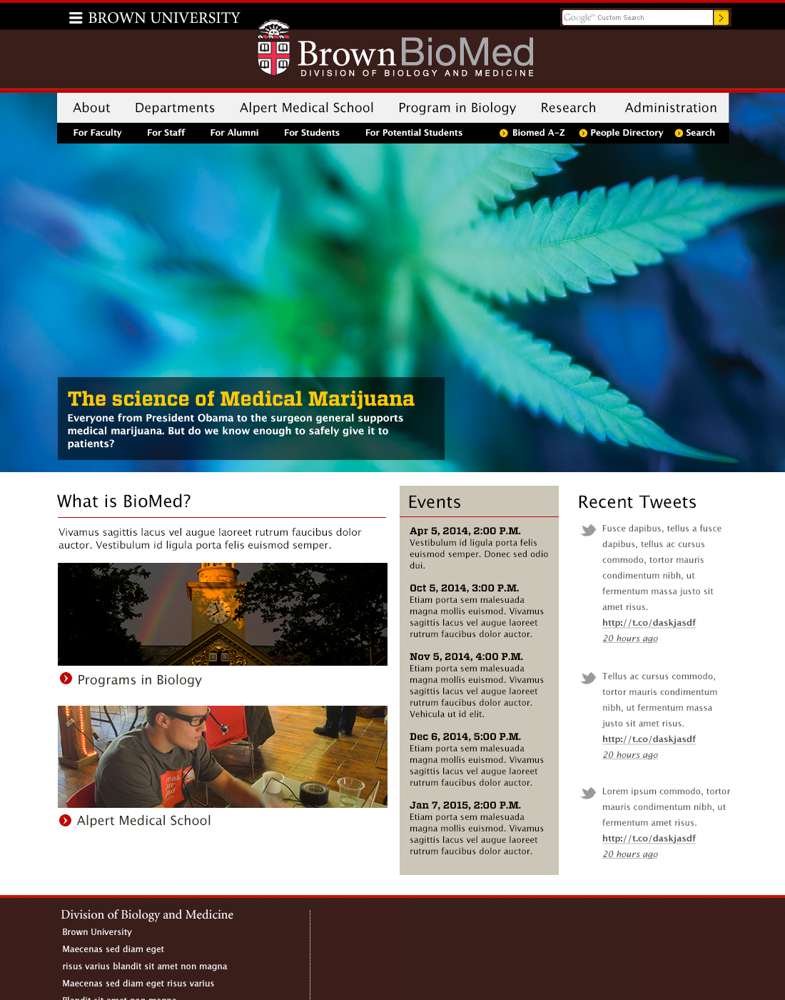

Little Hands, Big Minds
- WordPress site for Pre-K and childhood educators.
- This blog and reference website is based on the Pinboard theme by OneDesigns. I heavily modified the styles and rewrote much of the header.
- http://littlehandsbigminds.com
- 2017
Scott J. Turner
- Personal portfolio website
- This WordPress-built portfolio website is based on Novo Theme by ZigzagPress, built in the Genesis framework.
- http://scottjturner.com
- 2017
President's office
- Brown University President's office
- 2016

BioMed Division
- Homepage for Brown BioMed division
- 2016
Brown in Motion
- Video portal for Brown University
- This design was proposed but never implemented.
- 2015
Contemplative Studies
- Brown department homepage.
- 2015
News from Brown
- Homepage for Brown news website.
- 2014
News slideshow
- Image-heavy page to highlight slideshow in the news website.
- 2014
For Journalists page
- Directory/information page for journalists to contact Media Relations staff.
- 2014
Public Health
- Homepage for Public Health website.
- 2013
Office of Institutional Diversity
- Homepage for Brown department.
- 2013
School of Engineering
- Homepage for Brown School of Engineering
- 2013
Events at Brown
- Brown University events calendar
- This design was proposed but never implemented
- 2013
Graduate School
- Homepage for Brown graduate school
- 2012
Financial Aid
- Financial Aid homepage
- 2012

Alpert Medical School
- Homepage design for Alpert Medical School
- 2011
RICIE
- An opportunity to break from the Brown template for an affiliated Center.
- Rhode Island Center for Innovation and Enterpreneurship
- 2009